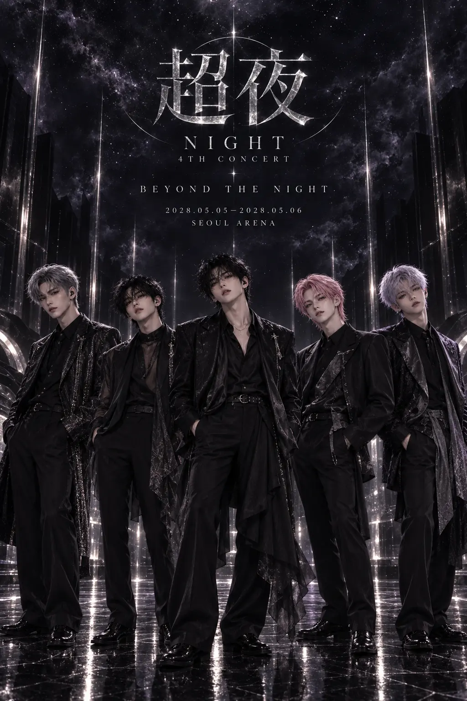
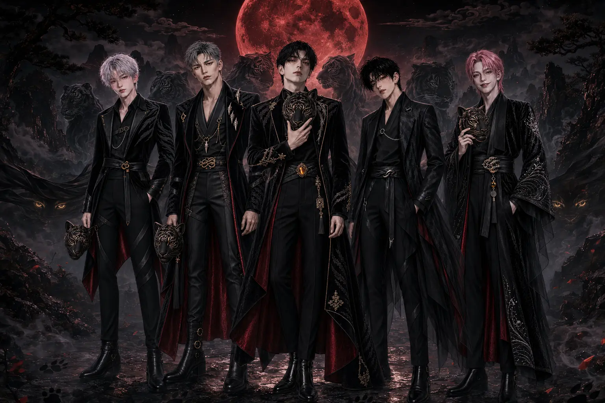
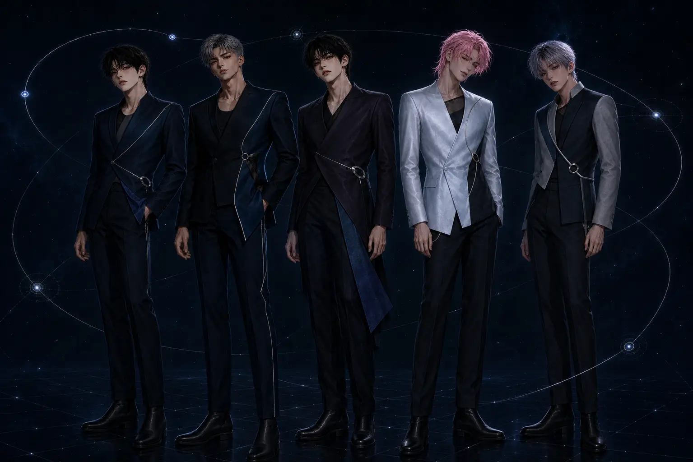

Official Archive
Gallery
NIGHT의 현재 활동과 초기 5인 체제를 함께 기록한 공식 비주얼 아카이브. 멤버별·시대별 필터를 선택하거나 이미지를 눌러 크게 볼 수 있다.


2028.08.21 · OFFICIAL ARCHIVE
PERSONA
DAY와 NIGHT, 두 얼굴로 이어지는 PERSONA의 콘셉트와 앨범, 뮤직비디오 스틸 및 무대 기록.
VIEW ARCHIVE ↗
2028.05.05–2028.05.06 · OFFICIAL ARCHIVE
NIGHT 4TH CONCERT 超夜
NIGHT SKY에서 THE NIGHT BEYOND까지. 초야의 포스터와 티켓, 무대의 흐름을 담은 콘서트 아카이브.
VIEW ARCHIVE ↗

2027.11.15 · 5TH ANNIVERSARY
FIVE YEARS. ONE NIGHT.
NIGHT의 다섯 해를 따라 걷는 여덟 공간과 공식 단체 비주얼.
ENTER THE POP-UP ↗
2027.10.01 · MINI ALBUM ARCHIVE
SENSATIONAL
달빛 아래 흑호의 기운으로 완성한 범(虎)의 콘셉트와 앨범, 무대 기록.
VIEW SENSATIONAL ↗

2026.09.22 — 2027.06.21 · MEMBER EVENTS
BIRTHDAY CAFÉ ARCHIVE
다섯 멤버의 고유한 콘셉트로 완성된 생일카페 공간과 오브제 68점.
VIEW FIVE STORIES ↗



2026.12.15 · OFFICIAL EVENT ARCHIVE
YEAR-END AWARDS
레드카펫부터 시상식과 백스테이지까지, NIGHT의 연말 시상식 열두 장면.
VIEW EVENT ARCHIVE ↗
2026.12.10 · WINTER SPECIAL ALBUM
AFTER HOURS
새벽의 도시와 고요한 오피스에서 이어지는 프로모션·앨범·무대 공식 아카이브.
ENTER AFTER HOURS ↗
2026.09.19 · OFFICIAL EVENT ARCHIVE
PHANTOM FANSIGN
앨범 발매 후 LUNA와 마주한 NIGHT. 팬사인회 현장의 열여섯 장면을 기록했습니다.
VIEW FANSIGN ARCHIVE ↗
SPECIAL CONCEPT ARCHIVE
IF : NIGHT
학교, 조선, 신화와 꿈속까지. 11개의 상상 속에서 만나는 NIGHT의 또 다른 모습.
EXPLORE IF : NIGHT ↗